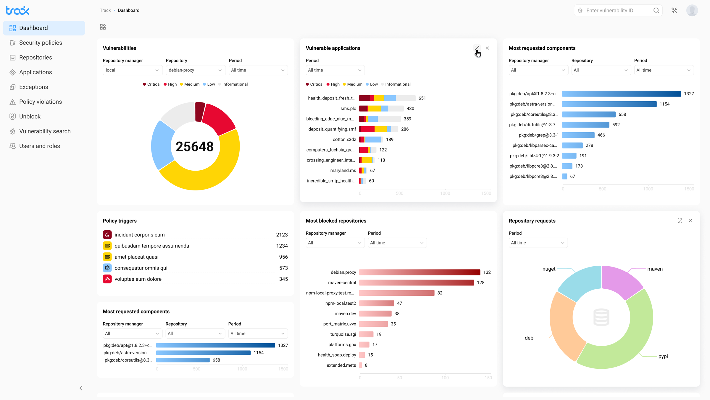
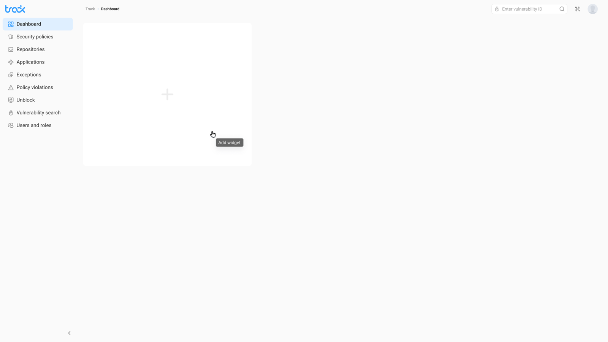
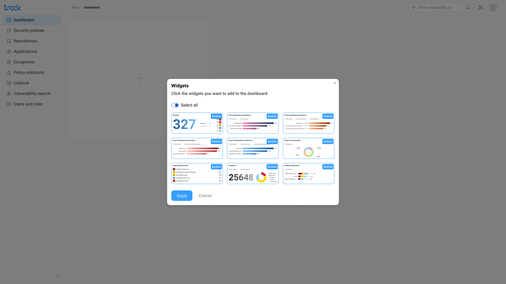
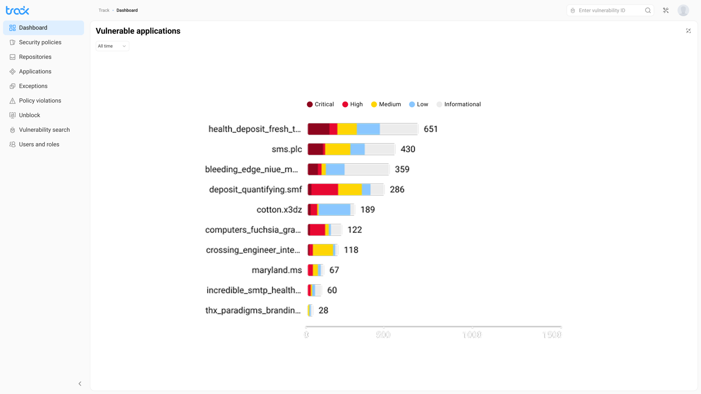

Context
Security-команды работали с разными первыми вопросами:Security teams started from different first questions:
- DevOps следил за репозиториями,DevOps watched the repositories,
- AppSec-аналитик — за severity и приложениямиthe AppSec analyst — severity and applications
- менеджер — за политиками и нарушениямиthe manager — policies and violations
Один статичный дашборд давал шум одним ролям и слепые зоны другим.A single static dashboard gave noise to some roles and blind spots to others.
Design challenge
Нужно было дать пользователю контроль над обзором, но не превращать настройку в сложный конфигуратор. Empty state должен вести к первому действию, а widget picker объяснять выбор до применения.I had to give users control over their overview without turning setup into a complex configurator. The empty state had to lead to the first action, and the widget picker had to explain the choice before applying it.

Моя рольMy role
Проектировала дашборд от ролевых сценариев до handoff: IA, empty state, widget picker, заполненный dashboard, expanded view и severity-визуализацию. Работала с PM, аналитиками безопасности и разработкой.I designed the dashboard from role-based scenarios to handoff: IA, empty state, widget picker, the populated dashboard, expanded view and severity visualization. I worked with PM, security analysts and engineering.
ЗадачиGoals
- Разложить дашборд по ролевым вопросам, а не по типам графиковOrganize the dashboard around role questions, not chart types
- Спроектировать empty state и widget picker как короткий путь к первому обзоруDesign the empty state and widget picker as a short path to the first overview
- Выстроить populated dashboard: иерархия, размеры виджетов и приоритет данныхBuild the populated dashboard: hierarchy, widget sizes and data priority
- Собрать expanded view и severity-систему для разных типов визуализацииAssemble the expanded view and a severity system for different visualization types
РешениеSolution
Empty state как точка старта, а не тупик:The empty state as a starting point, not a dead end: пустой экран сразу предлагает действие: добавить виджет. Большая зона с «+» показывает, что здесь появится персональный обзор.the empty screen immediately offers an action — add a widget. A large “+” area shows that a personal overview will appear here.

Widget picker: выбор с пониманием:Widget picker: an informed choice: пикер показывает превью виджетов до подтверждения. Select all ускоряет старт, ручной выбор даёт контроль, active-бейджи показывают текущий набор.the picker shows widget previews before confirmation. Select all speeds up the start, manual selection gives control, and active badges show the current set.

Populated dashboard: единый обзор безопасности:Populated dashboard: a single security overview: обзор собирает severity, уязвимые приложения, заблокированные репозитории и policy triggers. Цветовая система Critical/High/Medium/Low/Informational остаётся единой во всех виджетах.the overview brings together severity, vulnerable applications, blocked repositories and policy triggers. The Critical/High/Medium/Low/Informational color system stays consistent across all widgets.
Expanded view: детали без потери контекста:Expanded view: detail without losing context: виджет раскрывается в детальный режим со stacked bar chart, периодом и hover-state по severity. Вернуться к обзору можно одним кликом.a widget expands into a detailed mode with a stacked bar chart, time period and severity hover states. You can return to the overview in one click.

РезультатOutcome
- 1 мин. на сборку1 min to assemble персонального security-обзора метрикa personal security overview of metrics
- DevOps, AppSec-аналитик и менеджер могут собрать разные наборы метрик, не расходясь по разным продуктовым сценариям.DevOps, the AppSec analyst and the manager can assemble different sets of metrics without splitting into separate product flows.
- Продуктовая команда может добавлять новые виджеты без пересборки всей логики дашборда.The product team can add new widgets without rebuilding the whole dashboard logic.